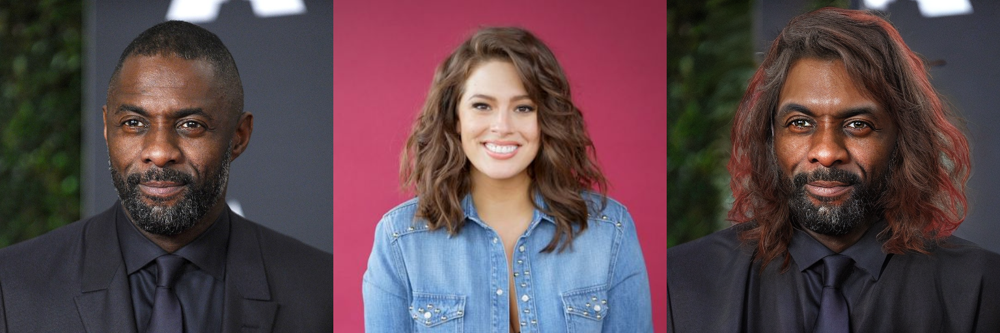
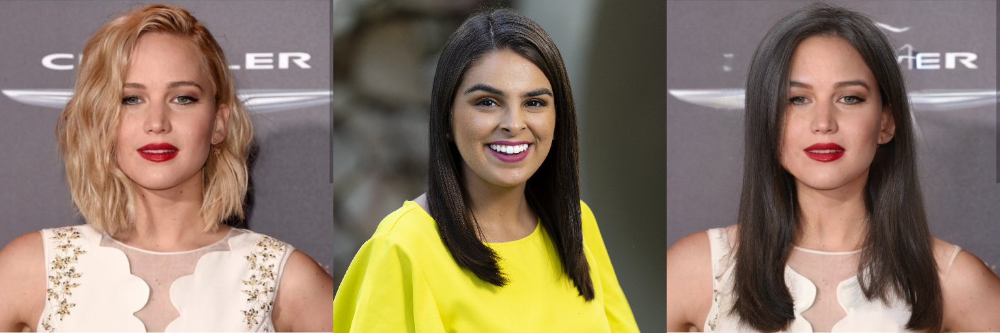

Wind Effect. We first add a strong wind to blow the hair of the reference image. The wind direction is rotated 70◦ clockwise (top-down view) from the camera view, centered on the person.
We use text prompts
"A very strong wind blows through the scene, coming from a direction rotated 70 degrees clockwise (top-down view, centered on the person in the image) relative to the camera’s view."
to guide baselines.
However, even with aggressive wording (e.g., "strong wind"), both baselines fail to move the hair. In contrast, ControlHair employs control signals generated by a physics simulator, which accurately drives the hair motion in the expected direction.
WAN 2.1
UniAnimate-DiT
Ours
Human Motion. In Setting 2, the user’s head is required to first rotate to the right of the camera, then to the left, and finally return to the center. We evaluate two aspects: whether the head motion follows the specified sequence, and whether the hair dynamics are controllable.
In WAN 2.1, we use the text prompt:
"The person in the scene first turns their head to the right side of the camera, then moves it back to the center, then turns their head to the left side of the camera, and finally returns it to the center."
Although the prompt clearly specifies the intended motion, the generated video shows the head turning only to the right but never to the left, violating the required sequence. UniAnimate-DiT successfully controls the head pose, as it is conditioned on human poses; however, it cannot control hair dynamics and instead relies solely on the diffusion prior. In contrast, ControlHair achieves accurate control of both head motion and hair dynamics by following simulator-provided signals, yielding richer and more controllable results.
WAN 2.1
UniAnimate-DiT
Ours
🎬 Videos in Quantitative Comparisons
One way to evaluate qualitatively is through the control-signal-to-video reconstruction task. Specifically, we extract control signals from an RGB video, generate a new video from the control signals, and evaluate the generated video by treating the original video as ground truth.
Use case1:💇 Dynamic Hair Try-on
To enable dynamic hair try-on, we cascade ControlHair after a prior static hair try-on system. We use HairFusion for the static stage.
Each row below represents a group of data. The left side shows the results of Static Try-On (User Image, Target Hairstyle, Try-on Image), and the right side
shows the control signals and generated video.


Use case2:💫 Bullet Time Hair Effect
Since we can freely control both the physics simulation and the camera trajectory, our method can produce effects similar to bullet time.
Specifically, we first apply wind in the simulator to lift the hair, and then freeze the simulation. After freezing, we rotate the camera around the subject to render time-frozen videos from different viewpoints.
Use case3: 🎞️ Cinemagraphic
We also use ControlHair to create cinemagraphic effects.
Specifically, we design videos where only the hair moves while the rest of the scene remains nearly static, which is achieved by fixing the human pose in the control signals.
To further enable looping playback, we append a reversed copy of the generated video to the original, producing a seamless GIF-like loop.
✨ More Results
We also provide additional results of ControlHair.
Here, each video is generated with four random wind conditions (direction and strength) and randomly sampled human motions.